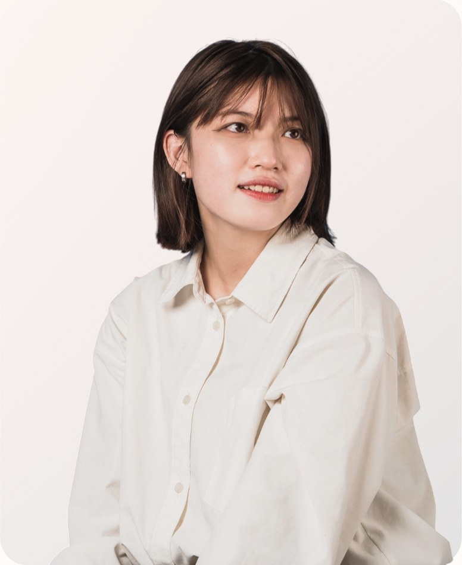

Works
DesigningUI / UXVisual Design
OPENPOINT Redesign
About

EXPERIENCE
- OpenHCI 視覺行銷部2026
- Jubo 智齡科技 UX 實習2023–24
- 中華電信 蹲點「與泥共好」2024
- BUILDMODE Hackathon2026
EDUCATION
- 政治大學 數位內容所NOW
- 大同大學 媒體設計系2022–25
- 復興商工 美術系2017–20
AWARDS
- 華燦獎 三等獎2024
- 金點新秀 贊助特別獎2025
- 放視大賞 入圍2025
- 城市通黑客松 決賽入圍2026
SKILLS
- UI / UXFigma · FigJam · Miro
- 視覺設計Illustrator · Photoshop · InDesign
- 3D 建模Blender · Maya
- 影片剪輯Premiere Pro · After Effects
CONTACT
Loucked66@gmail.com